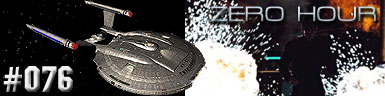
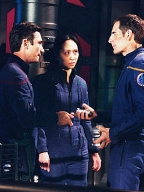
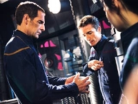

|
Enterprise
Temporada 3

Anlise do episdio por
Salvador Nogueira



|
MANCHETE
DO EPISDIO |
Comentrios:  
"Zero Hour"
um episdio de ao. Enquanto tal, ele cumpre seu papel,
solucionando a contento o longo arco da ameaa Xindi. Mas faltam
os toques de brilhantismo que poderiam ter transformado a
concluso dessa aventura num clssico da franquia.
O andamento da histria j est configurado desde o episdio
anterior. Desde o incio, o enredo se desenrola em duas frentes.
Numa delas, Archer, na nave de Degra, tenta impedir os Reptilianos
de lanarem sua arma contra a Terra. Na outra, a Enterprise
precisa destruir as Esferas e pr um fim na Extenso Dlfica.
As duas andam lado a lado ao longo do episdio, e o ritmo
impresso a cada uma dessas histrias adequado. Cria-se bem o
efeito da "corrida contra o relgio", que era a
principal inteno dos roteiristas aqui.
De novo, numa primeira assistida, esse detalhe no suficiente
para estragar a experincia. O mais importante aqui o ritmo,
que funciona. E a concluso de seqncia boa, com a cena do
embate final entre o general Reptiliano e Archer. A forma como o
humano vence a luta, prendendo uma bomba nas costas de seu
adversrio excessivamente paramentado, perfeita. Scott Bakula
faz uma expresso indescritvel ao pressionar o boto do
controle remoto na frente de seu algoz. o tipo da cena que s
funcionou porque o ator teve qualidade para interpret-la. Mas
funcionou, isso o que importa.
Do outro lado, a Enterprise vai se aproximando de uma Esfera,
enquanto estabelece um meio de destrui-la e com isso iniciar uma
reao em cadeia que destruir toda a rede. Aqui o ritmo
tambm excelente (talvez ainda melhor do que na outra frente
do episdio), mas o enredo no resiste a um escrutnio maior.
Desde o comeo da temporada, temos visto como a NX-01
vulnervel s distores da Extenso Dlfica. Agora,
surpreendente que ela consiga atravessar essas mesmas
distores, intensificadas pelos Construtores das Esferas, a
ponto de destruir uma das esferas com um disparo prolongado do
refletor. Relembrando a temporada inteira, no soa muito
convincente.
Alm disso, o telespectador pode se perguntar por que os
Construtores demoraram tanto a interferir com a NX-01, se podiam
ter feito isso em outras ocasies, com muito mais sucesso e tempo
hbil para acabar com a misso de Archer e Cia.
Apesar desses problemas, o que conta a diverso, e os efeitos
especiais garantem que a seqncia da destruio das Esferas
seja to espetacular quanto deveria ser.
Uma boa surpresa a apario de Shran, ajudando Archer na hora
"H". Tambm soa um pouco conveniente demais, mas
sempre bom ter Jeffrey Combs em maquiagem azul para mais um
episdio.
Outro pequeno detalhe incmodo (talvez o maior defeito de ritmo
em todo o episdio). Por que diabos leva mais tempo para acionar
a arma Xindi com trs cdigos, em vez de cinco? No faz o menor
sentido... E o que irrita mais que esse detalhe podia muito bem
ter ficado de fora, sem prejuzo do enredo.
No final, como era de se prever, tudo d certo, a arma
destruda, as Esferas, idem, e a NX-01 est pronta para voltar
para casa... sem seu capito. Archer morreu? Num primeiro
momento, at parece que sim. Mas terminamos o episdio em
choque! A Enterprise recebida por avies da velha Fora
Area dos Estados Unidos, e o capito foi parar num campo de
prisioneiros comandado por alemes nazistas, apoiados por um
misterioso aliengena de uma raa desconhecida. Que diabos?
Lembra o final de "Planeta dos Macacos", o novo, de Tim
Burton -- o que no necessariamente algo ruim.
As respostas para o mistrio, no entanto, ficaram para o incio
da quarta temporada.
T'Pol - "Without humanity
there will be no one to combat these Sphere Builders and their space
will continue encompasing one system after another until it consumes
even Vulcan."
("Sem a humanidade, no haveria ningum para combater estes
Construtores de Esferas, e o espao deles iria continuar expandindo
para um sistema depois do outro at que iria consumir at mesmo
Vulcano.")
Archer - "I have no plans of dying on that weapon."
("Eu no tenho nenhum plano de morrer naquela arma.")
Dollum - "It's a shame. All that water. The Aquatics would feel
at home here."
(" uma pena. Toda esta gua. Os aquticos sentiriam-se em
casa aqui.")
Archer - "Remember, no heroics. Just get us in and then cover
your ass."
("Lembre-se, nada de herosmos. Apenas nos coloque l e ento
salve o seu rabo.")
Shran - "Lets Fight back!
Bring the forward cannons online... And tell Archer we're not even
anymore! He owes me!"
("Vamos lutar! Coloque os canhes dianteiros em prontido... e
diga a Acher que no estamos mais quites! Agora ele me deve!")
 De acordo com o produtor-executivo Rick Berman, o episdio inclui o
setup de um mini-arco que vir a ser a abertura da quarta temporada de
Enterprise.
De acordo com o produtor-executivo Rick Berman, o episdio inclui o
setup de um mini-arco que vir a ser a abertura da quarta temporada de
Enterprise.
 O episdio contou com uma participao de extras em papis de "walk-in",
no caso, um vencedor de um concurso de uma rdio de Seattle, e um DJ.
O episdio contou com uma participao de extras em papis de "walk-in",
no caso, um vencedor de um concurso de uma rdio de Seattle, e um DJ.
Escrito por Rick Berman e
Brannon Braga
Direo de Allan Kroeker
Exibido em 26/05/2004
Produo: 076
Elenco:
Scott
Bakula como Jonathan Archer
Jolene Blalock como
T'Pol
John Billingsley
como Phlox
Anthony Montgomery
como Travis Mayweather
Connor Trinneer como
Charlie 'Trip' Tucker III
Dominic Keating como
Malcolm Reed
Linda Park como Hoshi Sato
Elenco convidado:
Scott MacDonald como Comandante
Rptil
Rick Worthy como Xindi-Preguia
Tucker Smallwood como Xindi-Humanide
Josette DiCarlo como Construtora da Esfera
Bruce Thomas como Soldado Rptil
Andrew Borba como Tenente Rptil
Matt Winston como Daniels
Mary Mara como Construtora da Esfera
Ruth Williamson como Lder dos Construtores da Esfera
Jeffrey Combs como Shran
Gunter Ziegler como Doutor
J. Paul Boehmer como Oficial
Zachary Krebs como Andoriano
Sinopse, trivias e ficha
tcnica por Leandro
M.Pinto